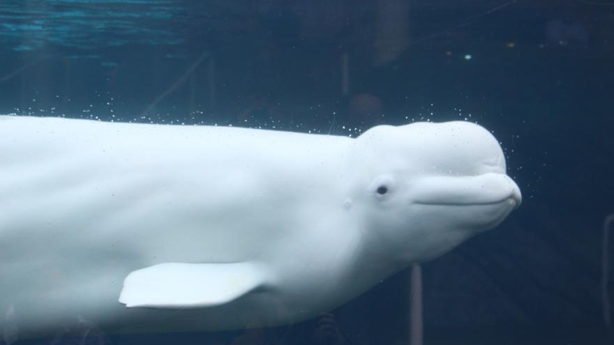
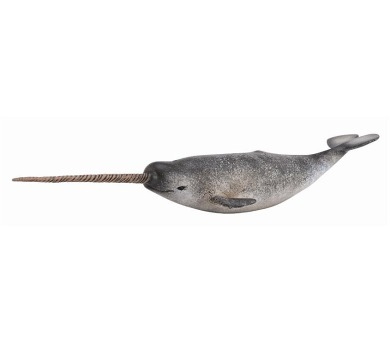
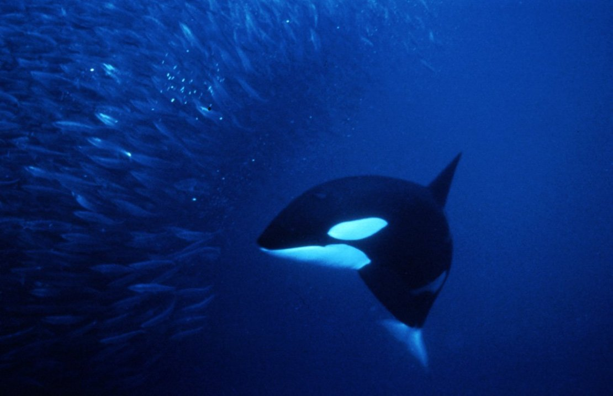
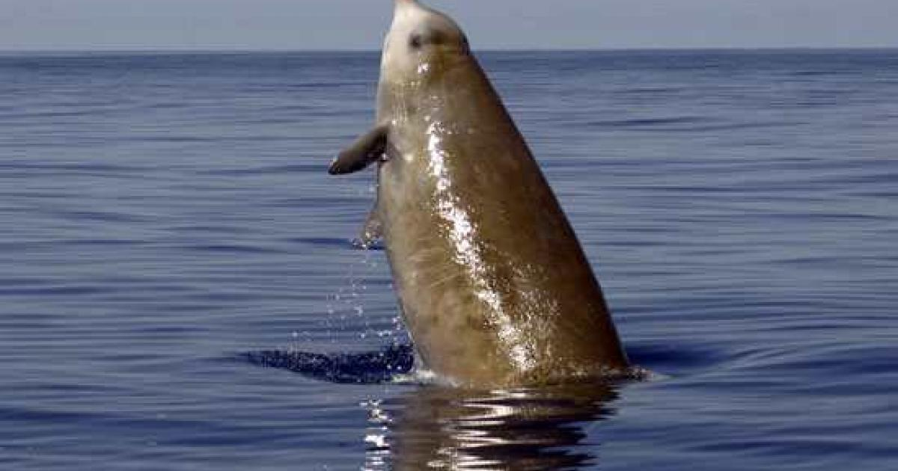
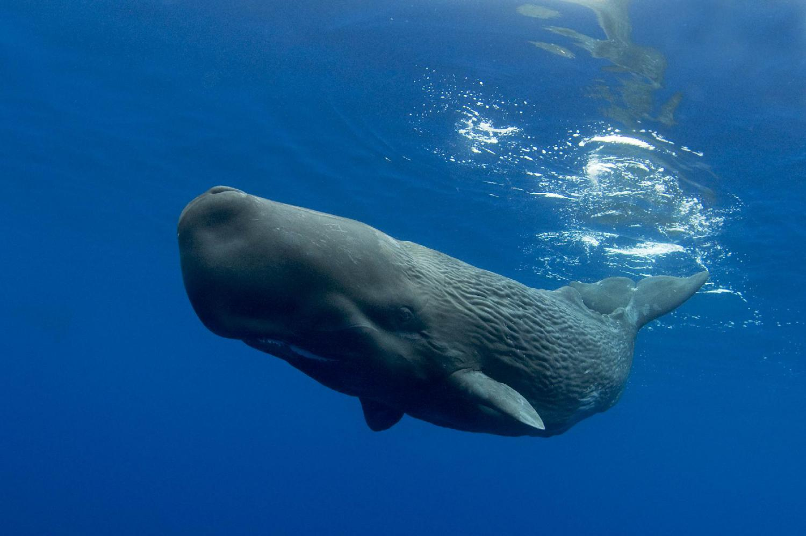

Ozubeni
- Jsou to aktivni lovci
- Zivi se rybama, chobotnicema a nekdy i morskymi savci
- Az na vyjimku jsou ozubeni mensi nez kosticovci
- Zuby se u druhu velmi lisi, muze jich byt spousta jako treba u delfinu, pote klem u narvalu nebo i temer bezzubych vorvanu
- Voravanovity sve zuby nevyuzivaji jenom na krmeni, ale treba k predvadeni nebo k utokum, zbytek celedi hlavne na krmeni
- Ozubeni narozdil od Kosticovcu dokazi vyuzit echolokace, ktera jim pomaha k loveni apod.
- Ozubeni patri k sviznym plavcum, mensi druhy se i casto svezou na vlnach
- Ozubeni zijou ve skupinach, ktere kdyz se spoji tak dokazou byt pocetne i okolo 1000 velryb. Tyto skupiny casto lovi a vyuzivaji tymove prace
- V zajeti prokazuji velky potencial k uceni se, radime je proto k nechytrejsim zvviratum na planete
Nejvyznamejsi jedinci ozubenych jsou napriklad
- Beluha
- Narval
- Kosatka drava
- Vorvanovec zobaty
- Vorvan




